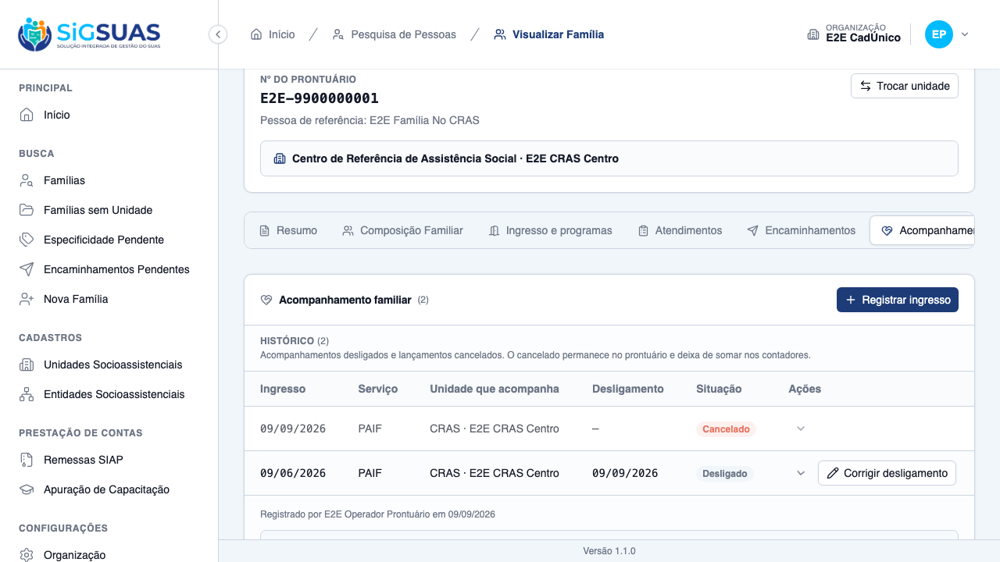
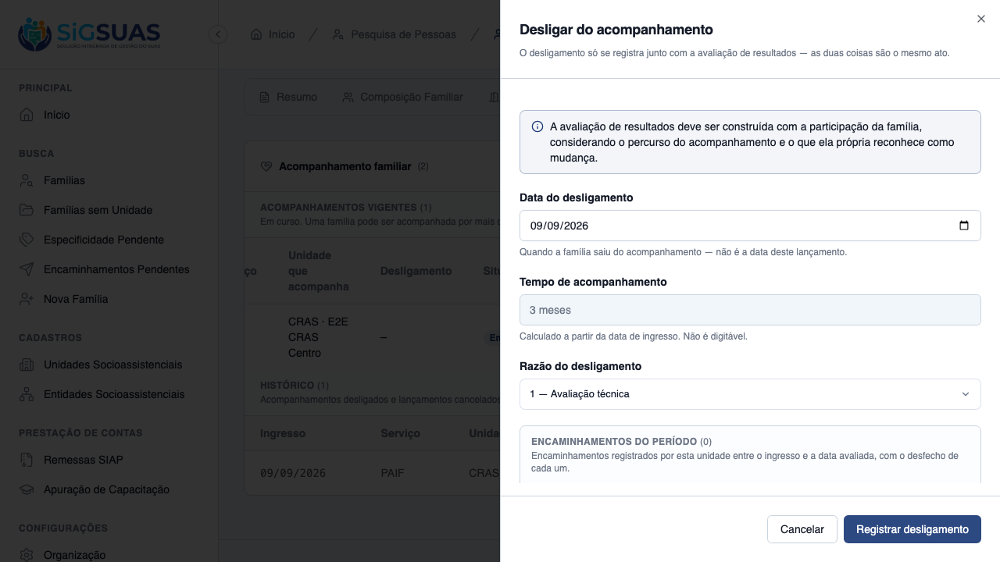
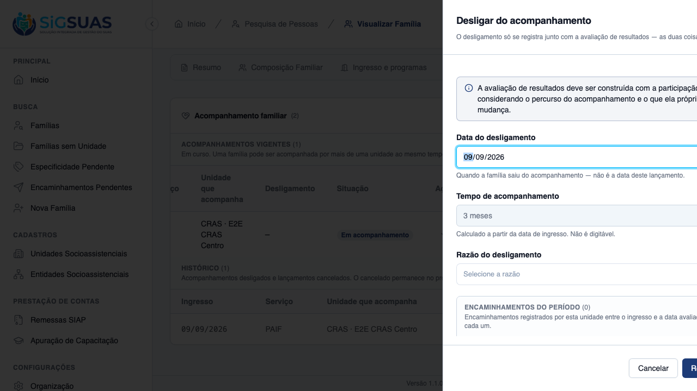
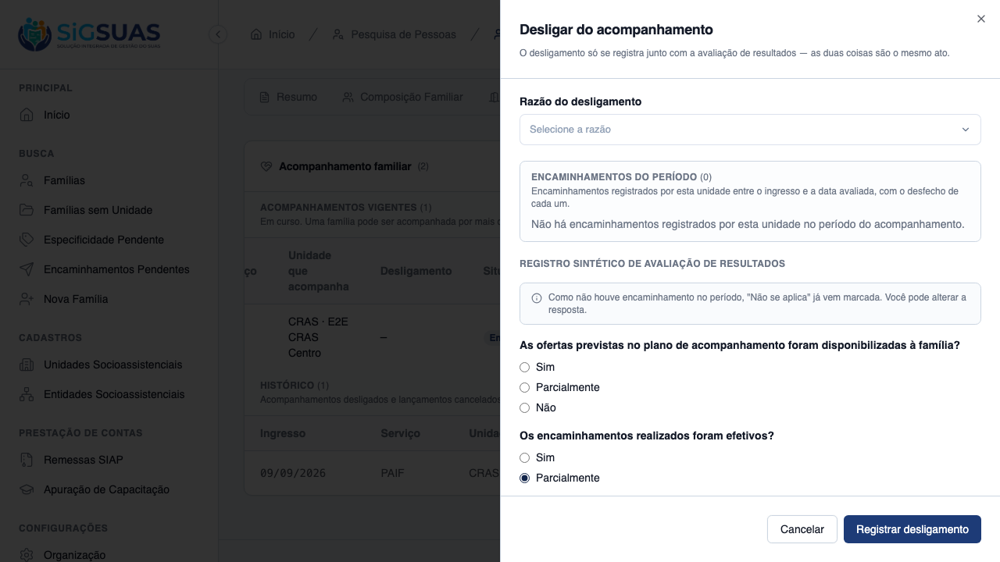
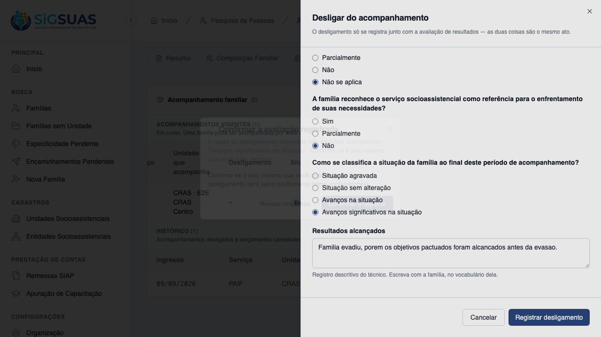
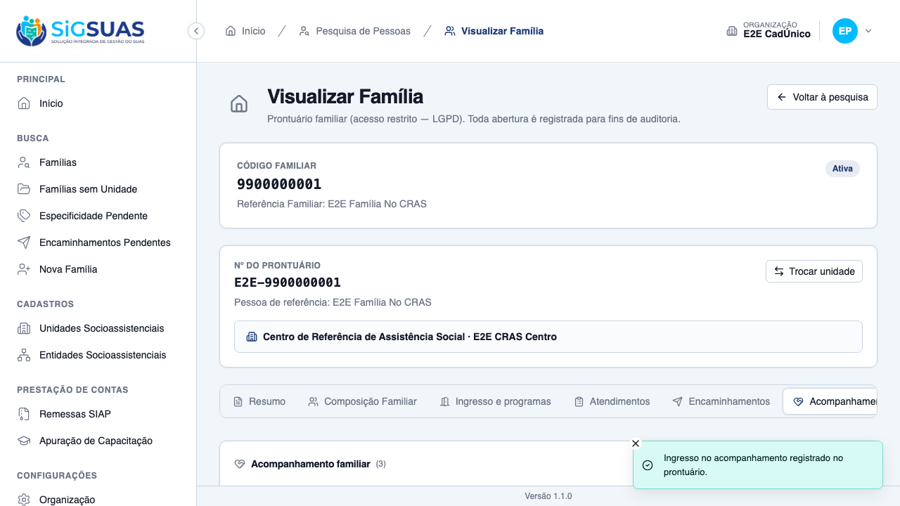

Quatorze critérios de aceite. Seis evidenciados no navegador (CA01, CA02, CA03, CA06, CA08 e CA11, com seis prints) e oito cobertos pela suíte automatizada. A suíte fecha com 42 testes e 397 asserções no filtro FollowUpDischarge|FollowUpEvaluation, dentro de 182 testes no filtro FollowUp e 87 no isolamento entre municípios. Os 20 cenários Playwright do arquivo unificado passam contra base recém-semeada. Nenhum critério em falha, e nenhum defeito de produto foi encontrado pela suíte — a camada de aplicação passou íntegra na primeira verificação.
| CA | Critério | Situação | Evidência |
|---|---|---|---|
| CA01 | Desligar preenchendo a avaliação de resultados | ATENDIDO | Print + Pest |
| CA02 | Concluir sem a avaliação é recusado | ATENDIDO | Print + Pest |
| CA03 | Tempo de acompanhamento derivado, não digitável | ATENDIDO | Print + Pest |
| CA04 | Avaliação periódica não encerra o acompanhamento | ATENDIDO (SUITE) | Pest |
| CA05 | Histórico de avaliações do acompanhamento | ATENDIDO (SUITE) | Pest |
| CA06 | “Não se aplica” sugerida apenas sem encaminhamentos | ATENDIDO | Print + Pest |
| CA07 | Encaminhamentos do período apresentados com seus desfechos | ATENDIDO (SUITE) | Pest |
| CA08 | Combinação incoerente pede confirmação | ATENDIDO | Print + Pest |
| CA09 | Avaliação não se apaga nem se edita (append-only) | ATENDIDO (SUITE) | Pest + prova estrutural |
| CA10 | Registro descritivo fora da trilha de auditoria | ATENDIDO (SUITE) | Pest |
| CA11 | A correção se faz por avaliação nova, ao lado da anterior | ATENDIDO | Print + Pest |
| CA12 | Correção de data e razão do desligamento | ATENDIDO (SUITE) | Pest |
| CA13 | Desligamento retroativo em período já declarado | ATENDIDO (SUITE) | Pest |
| CA14 | Isolamento entre municípios | ATENDIDO (SUITE) | Pest (TenantIsolation) |
| Extra | Reingresso após desligamento — critério destravado da US-ACOMP-02 | ATENDIDO |
Este dossiê numera os critérios pela especificação técnica da US-ACOMP-03, cuja ordem difere da do chamado. Nada muda no que foi verificado — a tabela abaixo diz onde encontrar, neste relatório, a evidência de cada critério como numerado no chamado. Três deles não têm seção própria e são evidenciados no anexo automatizado; em contrapartida, a seção CA12 deste relatório (correção de data e razão do desligamento) corresponde à RN12, e não a um critério de aceite do chamado.
| CA no chamado | Critério | Onde está neste relatório | Evidência |
|---|---|---|---|
| CA01 | Desligar com avaliação (happy path) | CA01 | |
| CA02 | Desligamento sem avaliação é recusado | CA02 | |
| CA03 | Tempo de acompanhamento calculado | CA03 | |
| CA04 | “Não se aplica” sugerida quando não houve encaminhamento | CA06 | |
| CA05 | Encaminhamentos existentes não pré-selecionam resposta | CA06 (segunda metade) e CA07 | Print + Pest |
| CA06 | Data de desligamento anterior ao ingresso é recusada | Anexo I — REFUSES a discharge date BEFORE the admission, writing nothing | Pest |
| CA07 | Aviso de incoerência | CA08 | |
| CA08 | Avaliação durante o acompanhamento não encerra | CA04 | Pest |
| CA09 | Avaliação não se apaga; a correção fica ao lado | CA09 e CA11 | Print + Pest |
| CA10 | Registro descritivo fora da trilha de auditoria | CA10 | Pest |
| CA11 | Retroativo em período já declarado | CA13 | Pest |
| CA12 | Desligamento preserva o histórico e segue contando | Anexo I — keeps the whole history in the record block; a contagem nos períodos vigentes é a apuração verificada na US-ACOMP-05 | Pest |
| CA13 | Negativa por unidade declara o motivo, sem nomeá-la | Anexo I — denies the discharge of a family of ANOTHER unit, without naming it, e a equivalente da avaliação | Pest |
| CA14 | Isolamento entre municípios | CA14 | Pest |
Dado um acompanhamento vigente, quando o profissional informa razão, data, as quatro respostas fechadas e o registro descritivo, então o acompanhamento é encerrado e a avaliação fica registrada ao lado.
discharge.
Dado o formulário de desligamento, quando o profissional tenta concluir sem responder as perguntas, então a conclusão é recusada e o acompanhamento permanece vigente.
active e nenhuma linha de avaliação é criada. A suíte prova isso contando linhas antes e depois em sete caminhos de erro distintos.
Dado o formulário de desligamento, quando ele é aberto, então os meses de acompanhamento aparecem calculados e não editáveis.
readonly, com aria-readonly="true" e fora da ordem de tabulação (tabindex="-1").months_in_follow_up não é coluna: é derivado a cada leitura, em um único ponto do Model.
Dado um acompanhamento vigente, quando se registra uma avaliação periódica, então ela é gravada sem encerrar nada.
periodic e não toca status, discharged_on nem a razão de saída.active.Sem prova visual: critério verificado pela suíte automatizada (ver anexo).
Dado um acompanhamento com várias avaliações, quando o prontuário é aberto, então todas aparecem em ordem.
Sem prova visual: critério verificado pela suíte automatizada (ver anexo).
Dado um período sem nenhum encaminhamento, quando o formulário abre, então “não se aplica” vem pré-selecionada na pergunta dos encaminhamentos — e continua alterável.

Dado encaminhamentos feitos durante o acompanhamento, quando o formulário abre, então eles aparecem com os desfechos para embasar a resposta.
[admitted_on, COALESCE(discharged_on, evaluated_on)], filtrado pela unidade do acompanhamento.Sem prova visual: critério verificado pela suíte automatizada (ver anexo).
Dado uma razão de desligamento que conflita com “avanço significativo”, quando o profissional escolhe essa combinação, então o sistema pede confirmação — e, confirmada, grava exatamente como informado.
follow_up_outcome_incoherent.
Dado uma avaliação registrada, quando se tenta alterá-la ou removê-la, então não há caminho para isso.
…/evaluations — nenhuma de update ou delete.deleted_at nem updated_by, de propósito: a linha É o registro.Sem prova visual: critério verificado pela suíte automatizada (ver anexo).
Dado que o registro descritivo contém informação sensível da família, quando o desligamento é gravado, então esse texto não aparece na trilha de auditoria.
LogsActivity — a decisão é estrutural, não um filtro que alguém possa esquecer.logAttributes, no mesmo molde já usado por atendimentos e encaminhamentos.Sem prova visual: critério verificado pela suíte automatizada (ver anexo).
Dado uma avaliação que precisa de correção, quando o profissional abre o histórico, então não há ação de excluir nem de editar — a correção é uma avaliação nova ao lado.
latestDischargeEvaluation() é latestOfMany() justamente porque o mesmo acompanhamento pode ter mais de uma avaliação de desligamento.Dado um acompanhamento desligado, quando se corrige a data ou a razão, então a correção é aceita sem criar avaliação nova.
Sem prova visual: critério verificado pela suíte automatizada (ver anexo).
Dado um mês cuja remessa já foi concluída, quando o desligamento é retroativo àquele mês, então é salvo com o aviso de regeração.
Sem prova visual: critério verificado pela suíte automatizada (ver anexo).
Dado um acompanhamento de outra organização, quando se tenta desligá-lo ou avaliá-lo, então a resposta é 404.
tests/Feature/TenantIsolation/, com 87 testes verdes no diretório.Sem prova visual: critério verificado pela suíte automatizada (ver anexo).
Dado um acompanhamento desligado, quando a família ingressa de novo na mesma unidade e serviço, então o novo ingresso é aceito e a linha anterior permanece intacta.

Ao contrário da US-ACOMP-02 — onde o E2E revelou um defeito real nas afordâncias da listagem — aqui a suíte de 65 testes não precisou tocar em nada de app/, routes/ ou lang/. A camada de aplicação passou íntegra na primeira verificação.
O plano exigia provar a ausência de update/delete de avaliação por 405. O correto é 404: a URI não existe para verbo algum, então não há “método não permitido”. Mais importante, a prova adotada é estrutural — o inventário das rotas registradas —, que demonstra a ausência em vez de inferi-la de um código de status.
Os cenários “cancelado fecha o acesso” e “desligado mantém o acesso” são estados mutuamente exclusivos do mesmo acompanhamento. Um acompanhamento desligado concede acesso permanentemente (decisão D09, sem prazo de validade) e não há como removê-lo pela API — cancelar um desligado responde 422, por regra. Logo, o par só é observável com a base recém-semeada, que é justamente o modo oficial de execução (npm run e2e:local roda migrate:fresh --seed). O cenário do cancelamento ganhou uma guarda que o pula com explicação quando encontra resíduo, em vez de medir o resíduo e falhar.
PASS Tests\Feature\Client\FamilyFollowUpDischargeTest ✓ it discharges the family WITH the results evaluation, in a single t… 0.50s ✓ it carimba a autoria do SERVIDOR e RECUSA estado e contexto vindos… 0.05s ✓ it REFUSES a discharge without the evaluation and leaves the follow… 0.04s ✓ it REFUSES a discharge whose descriptive record is too short — stil… 0.05s ✓ it REFUSES not_applicable in questions 1 and 3, and ACCEPTS it in q… 0.05s ✓ it derives months_in_follow_up and DISCARDS it when sent in the req… 0.05s ✓ it REFUSES a discharge date BEFORE the admission, writing nothing (… 0.04s ✓ it REFUSES a discharge date in the FUTURE (RN03) 0.05s ✓ it REFUSES an exit reason that does not exist or is INACTIVE (RN02) 0.05s ✓ it asks for CONFIRMATION on the incoherent combination and saves it… 0.05s ✓ it does NOT ask for confirmation when only ONE side of the combinat… 0.05s ✓ it REFUSES to discharge what is already discharged or cancelled (RN… 0.05s ✓ it NEVER logs achieved_results in the activity trail (CA10/RN05/D06… 0.05s ✓ it saves a retroactive discharge in a remitted month AND returns th… 0.06s ✓ it does NOT warn when the month has no COMPLETED remittance (CA11/R… 0.05s ✓ it keeps the whole history in the record block, evaluations in crea… 0.06s ✓ it denies the discharge of a family of ANOTHER unit, without naming… 0.05s ✓ it CORRECTS the discharge date and reason WITHOUT creating a new ev… 0.05s ✓ it REFUSES to correct the discharge of a follow-up that is NOT disc… 0.04s ✓ it REFUSES to REOPEN or to rewrite the evaluation through the corre… 0.05s ✓ it REVALIDATES RN03 and RN10 when correcting the discharge (RN12) 0.07s ✓ it warns for BOTH the old and the new month when correcting into re… 0.06s PASS Tests\Feature\Client\FamilyFollowUpEvaluationTest ✓ it suggests not_applicable ONLY when the period has no referral (CA… 0.06s ✓ it exposes the FOUR questions with not_applicable ONLY in the secon… 0.05s ✓ it recalculates months and the remittance warning for the PROPOSED… 0.05s ✓ it lists the referrals of the period with outcome and counter-refer… 0.06s ✓ it cuts the referrals by PERIOD and by the follow-up UNIT (D11) 0.06s ✓ it ends the period at discharged_on when the follow-up is already d… 0.05s ✓ it registers a PERIODIC evaluation that ends NOTHING (CA08/RN08) 0.05s ✓ it REFUSES a periodic evaluation that tries to discharge or to forg… 0.05s ✓ it REQUIRES an evaluation date between the admission and today (RN0… 0.05s ✓ it REFUSES not_applicable in questions 1 and 3 of the periodic eval… 0.05s ✓ it REFUSES a periodic evaluation on a follow-up that is NOT active… 0.05s ✓ it has NO route to update or delete an evaluation — the URI answers… 0.05s ✓ it places a CORRECTION beside the previous evaluation, both listed… 0.06s ✓ it admits MORE THAN ONE discharge evaluation, and latestDischargeEv… 0.04s ✓ it denies the whole evaluation surface for a family of ANOTHER unit… 0.06s PASS Tests\Feature\TenantIsolation\FamilyFollowUpEvaluationIsolationTest ✓ it answers 404 — never 403 — on ALL FIVE routes of another tenant (… 0.06s ✓ it never leaks a follow-up of ANOTHER tenant through MY family uuid… 0.04s ✓ it answers 404 when the follow-up belongs to ANOTHER family of the… 0.05s ✓ it scopes family_follow_up_evaluations by tenant_id even without th… 0.05s ✓ it blocks the request when the X-Tenant-UUID points at a tenant the… 0.05s Tests: 42 passed (397 assertions) Duration: 3.17s
[globalSetup] Rate-limiter cache do Laravel zerado. Running 20 tests using 2 workers ✓ 2 [setup] › tests/auth.setup.ts:10:6 › autentica super admin (UI) e propaga cookies para o api-client (1.3s) [tenant-auth.setup] sessão de tenant pronta em /Users/binho/Projetos/esuas-all/e2e/.auth/tenant.json ✓ 1 [setup] › tests/tenant-auth.setup.ts:82:6 › autentica usuário do tenant (client) e propaga cookies para o api-client (1.6s) ✓ 3 [chromium-tenant] › tests/client/family-follow-up.spec.ts:193:7 › US-ACOMP-02 — acompanhamento familiar no prontuário (client) › (g) família nunca acompanhada mostra o estado vazio do bloco (6.6s) ✓ 4 [chromium-tenant] › tests/client/family-follow-up.spec.ts:216:7 › US-ACOMP-02 — acompanhamento familiar no prontuário (client) › (b) num CRAS o select oferece só o PAIF — o PAEFI não é ofertado (7.9s) ✓ 5 [chromium-tenant] › tests/client/family-follow-up.spec.ts:234:7 › US-ACOMP-02 — acompanhamento familiar no prontuário (client) › (d) data futura é barrada no próprio formulário (8.0s) ✓ 6 [chromium-tenant] › tests/client/family-follow-up.spec.ts:262:7 › US-ACOMP-02 — acompanhamento familiar no prontuário (client) › (a) registra o ingresso no PAIF a partir de um CRAS (9.8s) ✓ 7 [chromium-tenant] › tests/client/family-follow-up.spec.ts:295:7 › US-ACOMP-02 — acompanhamento familiar no prontuário (client) › (c) segundo ingresso na mesma unidade e serviço é recusado, apontando o existente (9.4s) ✓ 8 [chromium-tenant] › tests/client/family-follow-up.spec.ts:323:7 › US-ACOMP-02 — acompanhamento familiar no prontuário (client) › (e) cancelar com motivo mantém a linha no prontuário, marcada (7.6s) ✓ 9 [chromium-tenant] › tests/client/family-follow-up.spec.ts:388:7 › US-ACOMP-02 — negativa de acesso ao bloco de acompanhamento (client) › (f) Operacional sem acesso não vê o bloco, e a negativa não nomeia unidade (6.4s) ✓ 10 [chromium-tenant] › tests/client/family-follow-up.spec.ts:511:7 › US-ACOMP-03 — desligamento e avaliação de resultados (client) › (c) os meses de acompanhamento são apresentados calculados e NÃO digitáveis (6.7s) ✓ 11 [chromium-tenant] › tests/client/family-follow-up.spec.ts:532:7 › US-ACOMP-03 — desligamento e avaliação de resultados (client) › (d) "não se aplica" vem sugerida quando não houve encaminhamento — e é alterável (7.5s) ✓ 12 [chromium-tenant] › tests/client/family-follow-up.spec.ts:562:7 › US-ACOMP-03 — desligamento e avaliação de resultados (client) › (b) concluir sem a avaliação é recusado, e o acompanhamento continua vigente (7.9s) ✓ 13 [chromium-tenant] › tests/client/family-follow-up.spec.ts:588:7 › US-ACOMP-03 — desligamento e avaliação de resultados (client) › (e) a combinação incoerente pede confirmação — e, confirmada, é salva como informada (9.8s) ✓ 14 [chromium-tenant] › tests/client/family-follow-up.spec.ts:636:7 › US-ACOMP-03 — desligamento e avaliação de resultados (client) › (a) o desligamento aparece no prontuário com a avaliação ao lado (6.4s) ✓ 15 [chromium-tenant] › tests/client/family-follow-up.spec.ts:659:7 › US-ACOMP-03 — desligamento e avaliação de resultados (client) › (f) a avaliação não tem ação de excluir nem de editar — e não há reabertura (6.5s) ✓ 16 [chromium-tenant] › tests/client/family-follow-up.spec.ts:680:7 › US-ACOMP-03 — desligamento e avaliação de resultados (client) › reingresso após desligamento é aceito, e a linha anterior permanece intacta (9.4s) ✓ 17 [chromium-tenant] › tests/client/family-follow-up.spec.ts:864:7 › US-ACOMP-04 — acesso ao prontuário pela unidade que acompanha (client) › (a) quando a minha unidade acompanha, o prontuário da família de outra unidade abre (5.9s) ✓ 18 [chromium-tenant] › tests/client/family-follow-up.spec.ts:875:7 › US-ACOMP-04 — acesso ao prontuário pela unidade que acompanha (client) › (b) o acesso é ao prontuário INTEIRO — composição, atendimentos e encaminhamentos (6.0s) ✓ 19 [chromium-tenant] › tests/client/family-follow-up.spec.ts:892:7 › US-ACOMP-04 — acesso ao prontuário pela unidade que acompanha (client) › (c) cancelado NÃO concede: o acesso fecha, e a negativa declara os dois eixos sem nomear unidade (12.9s) ✓ 20 [chromium-tenant] › tests/client/family-follow-up.spec.ts:940:7 › US-ACOMP-04 — acesso ao prontuário pela unidade que acompanha (client) › DESLIGADO mantém o acesso — só o cancelamento fecha (US-ACOMP-03 destrava este par) (18.0s) 20 passed (2.7m)